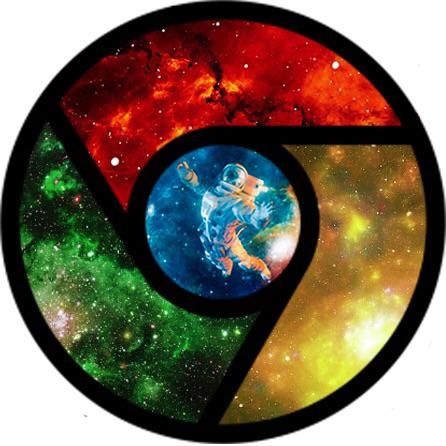
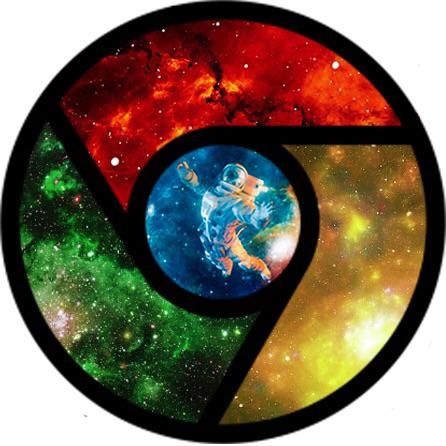

Google Chrome
Google Chrome is a freeware developed by Google Inc.
This page contains some tutorials and instrictions for learning HTML. As Audiences, you will learn about different vroswer options you have to view HTML files.
You'll also learn about the Document Object Model, also known as the DOM. Furthermore, you'll learn about different HTML elements, attribtes, and the semantics behind HTML elements.
Google Chrome is a freeware developed by Google Inc.
FireFox is an open source and free software developed by Mozilla Corp
Microsoft Edge is a browser develpped by Microsoft